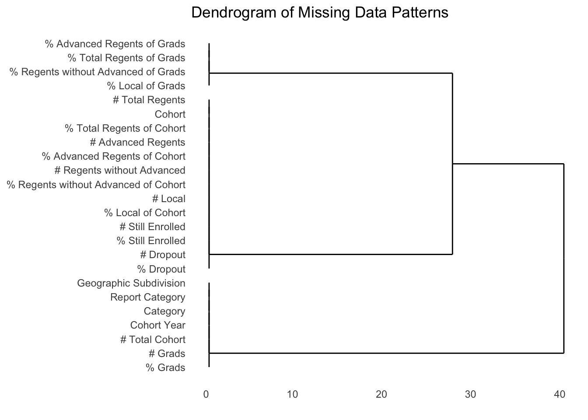

Code
suppressMessages(library(tidyverse))
library(readr)
library(visdat)
library(skimr)
library(ggdendro)Data Collection : The data follows the New York State Education Department’s methodology, defining a cohort as students who first entered 9th grade in a specific school year. Graduates are defined as those earning either a Local or Regents diploma. The dataset is updated annually, ensuring it reflects the most recent statistics.
Data Format : The dataset is presented in a tabular format, containing 29 columns and multiple rows for each geographic subdivision or school. Key fields include: - Cohort Year: Year of entry into 9th grade. - % Grads: Percentage of graduates in a cohort. - Dropout: Number of students who dropped out. - % Advanced Regents of Cohort: Percentage of students earning an Advanced Regents diploma relative to the cohort.
Data Frequency and Updates : The dataset is updated annually, with the most recent data available as of April 4, 2024. This ensures consistency and relevance for long-term trend analysis.
Issues and challenges:
Data Import : The dataset is available as a downloadable CSV file on NYC OpenData. It can be imported using data analysis tools like R or Python. Libraries such as pandas or data.table in Python or readr in R will be used for efficient data manipulation and exploration.
Source Documentation : The dataset can be accessed at NYC OpenData. Additional details on the data collection methodology are provided by the New York State Education Department.
suppressMessages(library(tidyverse))
library(readr)
library(visdat)
library(skimr)
library(ggdendro)data <- read_csv("Graduate Results.csv",
show_col_types = FALSE)cat("Number of rows:", nrow(data), "\n")Number of rows: 321002 cat("Number of columns:", ncol(data), "\n")Number of columns: 29 cat("Column names:\n")Column names:print(colnames(data)) [1] "Report Category"
[2] "Geographic Subdivision"
[3] "School Name"
[4] "Category"
[5] "Cohort Year"
[6] "Cohort"
[7] "# Total Cohort"
[8] "# Grads"
[9] "% Grads"
[10] "# Total Regents"
[11] "% Total Regents of Cohort"
[12] "% Total Regents of Grads"
[13] "# Advanced Regents"
[14] "% Advanced Regents of Cohort"
[15] "% Advanced Regents of Grads"
[16] "# Regents without Advanced"
[17] "% Regents without Advanced of Cohort"
[18] "% Regents without Advanced of Grads"
[19] "# Local"
[20] "% Local of Cohort"
[21] "% Local of Grads"
[22] "# Still Enrolled"
[23] "% Still Enrolled"
[24] "# Dropout"
[25] "% Dropout"
[26] "# SACC (IEP Diploma)"
[27] "% SACC (IEP Diploma) of Cohort"
[28] "# TASC (GED)"
[29] "% TASC (GED) of Cohort" cat("\nSummary of the dataset:\n")
Summary of the dataset:print(summary(data)) Report Category Geographic Subdivision School Name
Length:321002 Length:321002 Length:321002
Class :character Class :character Class :character
Mode :character Mode :character Mode :character
Category Cohort Year Cohort # Total Cohort
Length:321002 Min. :2000 Length:321002 Min. : 1.0
Class :character 1st Qu.:2013 Class :character 1st Qu.: 9.0
Mode :character Median :2015 Mode :character Median : 38.0
Mean :2015 Mean : 236.3
3rd Qu.:2017 3rd Qu.: 84.0
Max. :2019 Max. :74948.0
# Grads % Grads # Total Regents
Length:321002 Length:321002 Length:321002
Class :character Class :character Class :character
Mode :character Mode :character Mode :character
% Total Regents of Cohort % Total Regents of Grads # Advanced Regents
Length:321002 Length:321002 Length:321002
Class :character Class :character Class :character
Mode :character Mode :character Mode :character
% Advanced Regents of Cohort % Advanced Regents of Grads
Length:321002 Length:321002
Class :character Class :character
Mode :character Mode :character
# Regents without Advanced % Regents without Advanced of Cohort
Length:321002 Length:321002
Class :character Class :character
Mode :character Mode :character
% Regents without Advanced of Grads # Local % Local of Cohort
Length:321002 Length:321002 Length:321002
Class :character Class :character Class :character
Mode :character Mode :character Mode :character
% Local of Grads # Still Enrolled % Still Enrolled # Dropout
Length:321002 Length:321002 Length:321002 Length:321002
Class :character Class :character Class :character Class :character
Mode :character Mode :character Mode :character Mode :character
% Dropout # SACC (IEP Diploma) % SACC (IEP Diploma) of Cohort
Length:321002 Length:321002 Length:321002
Class :character Class :character Class :character
Mode :character Mode :character Mode :character
# TASC (GED) % TASC (GED) of Cohort
Length:321002 Length:321002
Class :character Class :character
Mode :character Mode :character
missing_values <- colSums(is.na(data))
print(missing_values) Report Category Geographic Subdivision
0 0
School Name Category
26459 0
Cohort Year Cohort
0 839
# Total Cohort # Grads
0 0
% Grads # Total Regents
0 839
% Total Regents of Cohort % Total Regents of Grads
839 1585
# Advanced Regents % Advanced Regents of Cohort
839 839
% Advanced Regents of Grads # Regents without Advanced
1585 839
% Regents without Advanced of Cohort % Regents without Advanced of Grads
839 1585
# Local % Local of Cohort
839 839
% Local of Grads # Still Enrolled
1585 839
% Still Enrolled # Dropout
839 839
% Dropout # SACC (IEP Diploma)
839 294543
% SACC (IEP Diploma) of Cohort # TASC (GED)
294543 294543
% TASC (GED) of Cohort
294543 total_missing <- sum(is.na(data))
print(paste("Total missing values:", total_missing))[1] "Total missing values: 1221878"data_clean <- data |>
select(-`# SACC (IEP Diploma)`,
-`% SACC (IEP Diploma) of Cohort`,
-`# TASC (GED)`,
-`% TASC (GED) of Cohort`,
-`School Name`)missing_values <- colSums(is.na(data_clean)) # This gives the number of missing values for each column
missing_df <- data.frame(
column = names(missing_values),
missing_count = missing_values
)
# Filter out columns that don't have any missing values
missing_df <- missing_df |> filter(missing_count > 0)
# Plot missing values by column
ggplot(missing_df, aes(x = reorder(column, missing_count), y = missing_count)) +
geom_bar(stat = "identity", fill = "royalblue") +
coord_flip() +
labs(title = "Missing Values by Column", x = "Column", y = "Number of Missing Values") +
theme_minimal() +
theme(axis.text.y = element_text(size = 8))This bar chart shows missing values across dataset columns. Columns like % Total Regents of Grads, % Regents without Advanced of Grads, and % Local of Grads have the most missing data. Cohort-related percentages and count-based columns, such as # Total Regents and # Dropout, show fewer missing values. Percentage-based columns generally have more gaps, which may affect analysis quality.
missing_matrix <- is.na(data_clean)
hc <- hclust(dist(t(missing_matrix)))
# Plot the dendrogram
ggdendrogram(hc, rotate = TRUE) +
labs(
title = "Dendrogram of Missing Data Patterns",
x = "Columns",
y = "Dissimilarity"
)
The dendrogram illustrates clustering patterns of columns based on their missing data similarity. Columns like “% Advanced Regents of Grads” and “% Total Regents of Grads” are closely grouped, indicating similar missingness behavior. Broader separations between clusters signify distinct missingness patterns across groups of variables. This structure helps identify patterns for imputation or exclusion, ensuring efficient handling of missing data while preserving relationships within clustered variables.